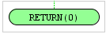

Elemento Start
El elemento Start es necesario para inicar el diagrama de flujo y tiene que colocarse siempre al principio de este.
Este elemento reprenta una Función o Procedimiento que se debe usar siempre tambien para el incio de una subrutina.
Parametros :
Se pueden definir Parametros del tipo:
Tipo de Datos
:
| Doble |
| String |
| Booleano |
| Exemplo : |
Test es el nombre del "Procedimiento/ función"
Todos los parátros son variables de tipo "local" que
pueden ser usadas en el digrama de flujo.
Se puede usar el elemento Start
como una "función" que devuelve un resultado.
Colocando simplemente al final una funcion "Return"

(Para más informacion ver la ayuda del elemento "Return")
Start puede activar un diagrama
normal o un procedimiento
| Example : |